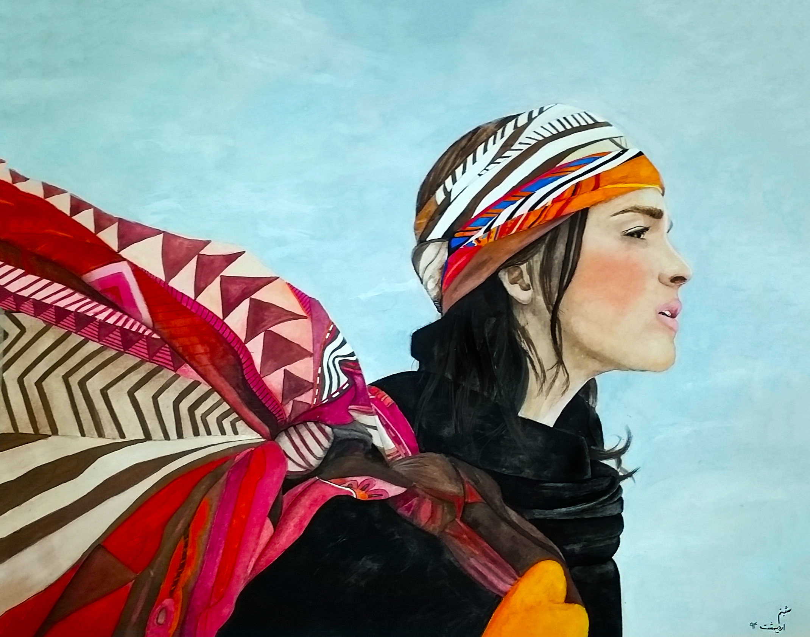
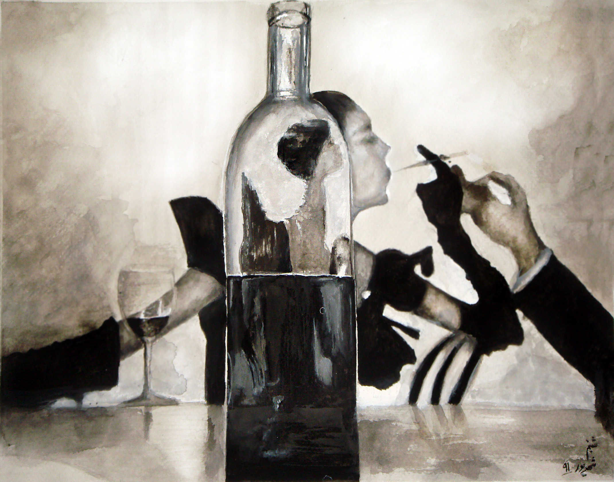
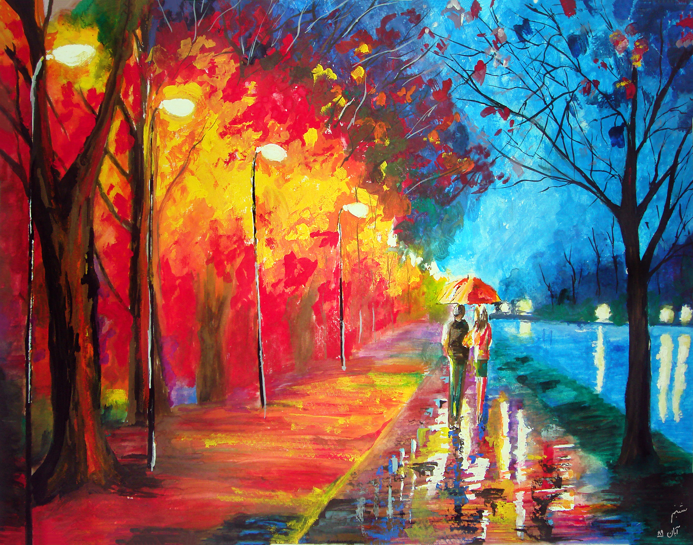
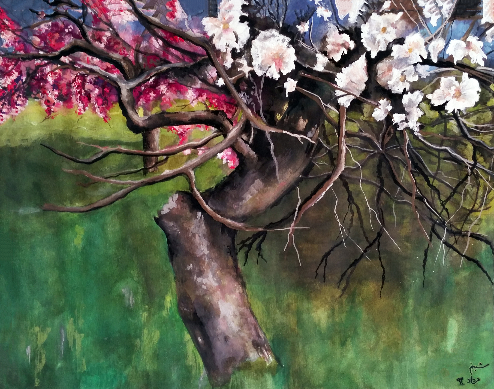
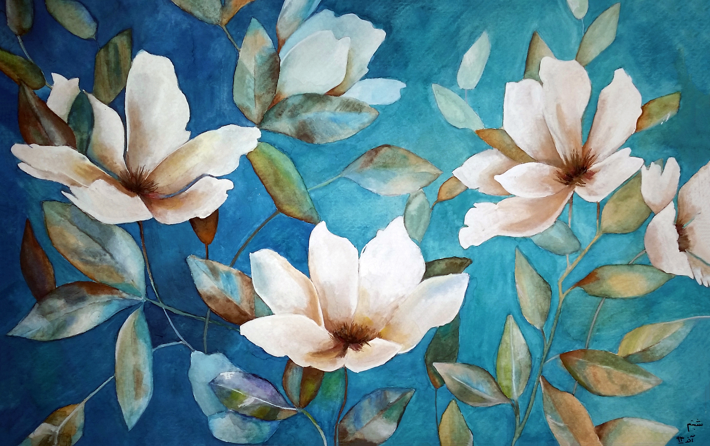
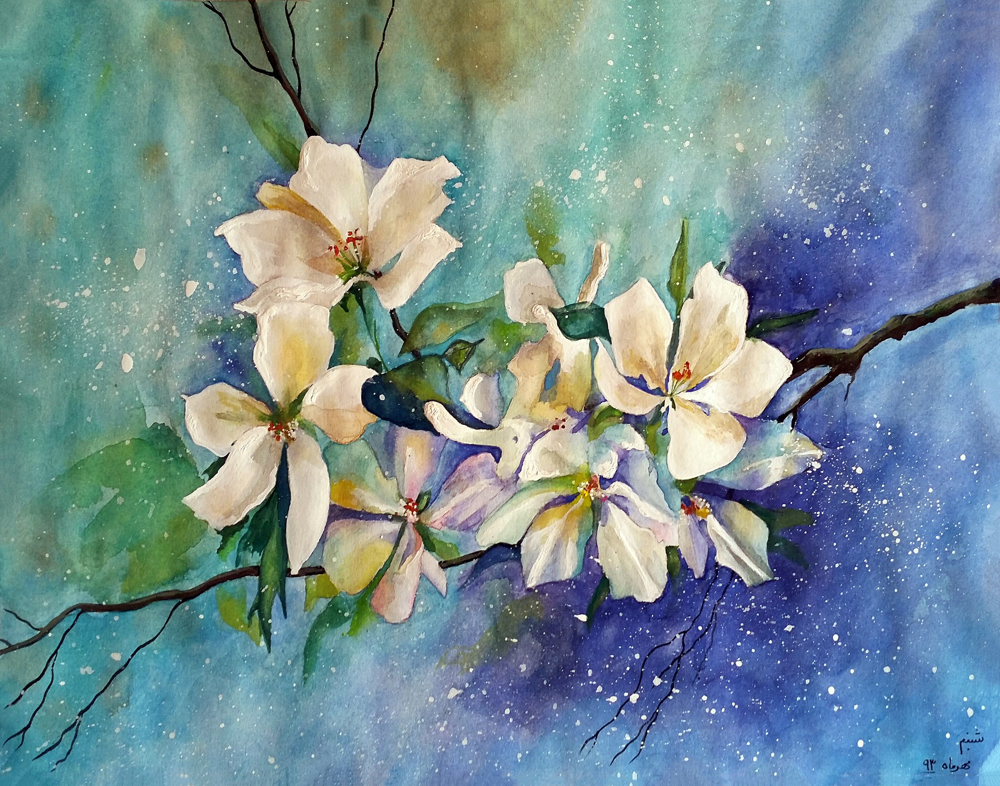
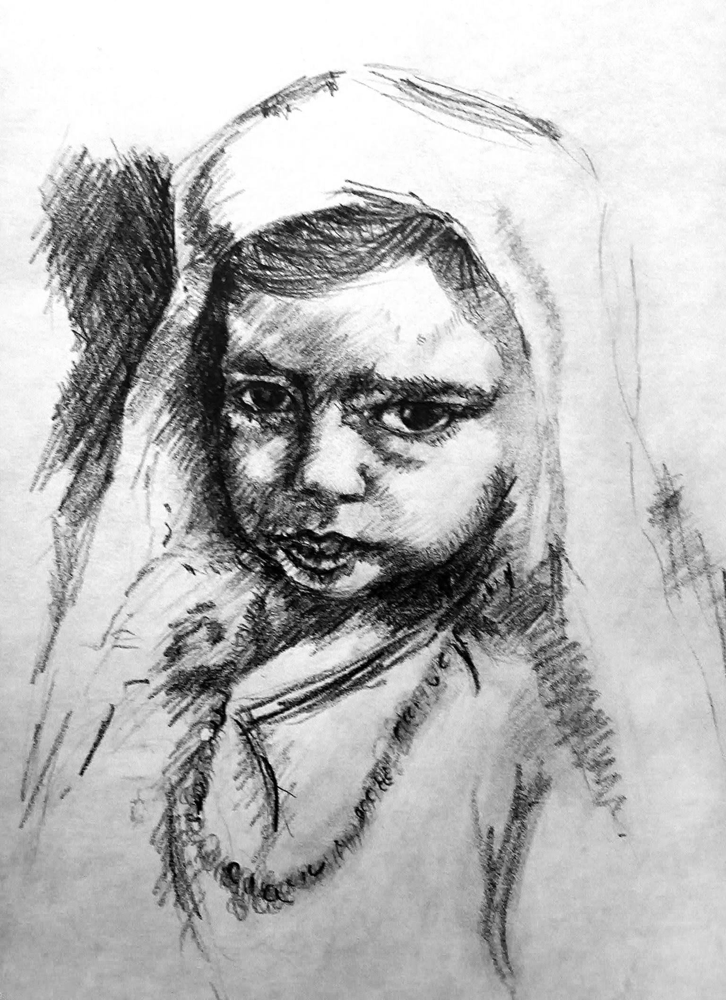
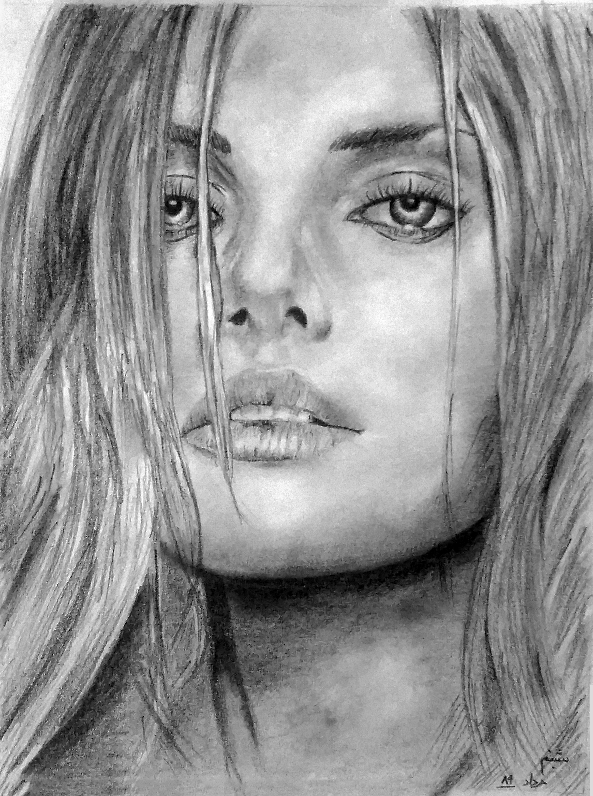

Portfolio
Here are some of my paintings. For more information about my art works visit my page on
Deviantart.com










I was born on March 22, 1994. I studied Engineering for 2 years at Houston Community College-Spring Brach Campus. I’m a passionate visual designer and skilled painter. Have experience in web development using CSS and HTML. Currently in the process of transferring to A&M majoring in Visualization or UT majoring in Arts and Entertainment (AET).